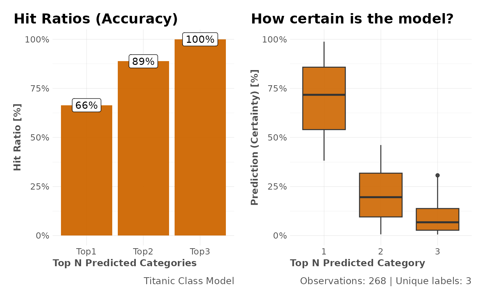

Calculate and plot a multi-class model's predictions accuracy based on top N predictions and distribution of probabilities.
See also
Other ML Visualization:
mplot_conf(),
mplot_cuts(),
mplot_cuts_error(),
mplot_density(),
mplot_full(),
mplot_gain(),
mplot_importance(),
mplot_lineal(),
mplot_metrics(),
mplot_response(),
mplot_roc(),
mplot_splits()
Examples
Sys.unsetenv("LARES_FONT") # Temporal
data(dfr) # Results for AutoML Predictions
mplot_topcats(dfr$class3$tag, dfr$class3$score,
multis = subset(dfr$class3, select = -c(tag, score)),
model_name = "Titanic Class Model"
)
